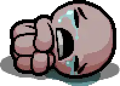
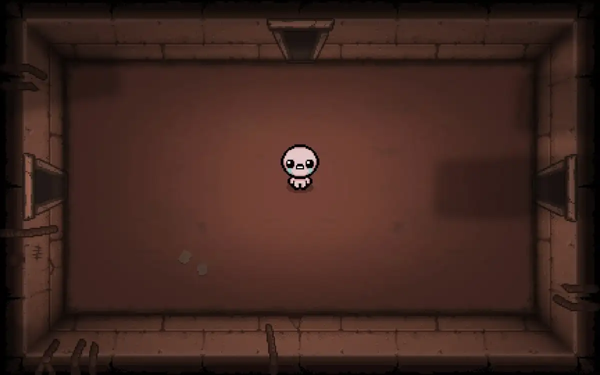
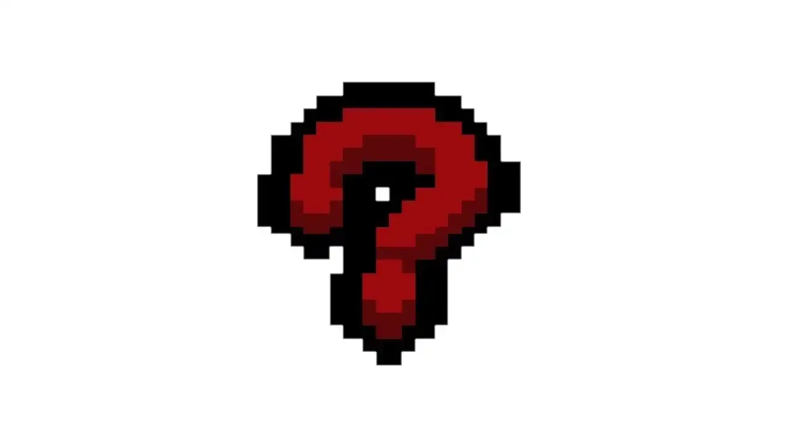

El diario secreto de un niño perdido
The Bindingof Isaac
Mamá escuchó una voz del cielo. Dijo que tenía que limpiarme del pecado.
Salté por la trampilla. Abajo, en el sótano, encontré mis miedos.
Y aprendí a llorar como arma.
La Historia de Isaac
Isaac es un niño que vive con su madre en lo alto de una colina apartada. Su vida es sencilla: dibuja, juega y mira televisión. Todo cambia el día en que su madre escucha una voz del cielo que le ordena demostrar su fe eliminando todo aquello que "corrompe" al niño.
Primero desaparecen sus juguetes. Luego su ropa. Finalmente, la voz exige algo más, y la madre avanza hacia la habitación de Isaac con un cuchillo. Desesperado, Isaac ve una trampilla en el suelo de su cuarto y salta hacia las tinieblas.
Lo que encuentra abajo es un sótano laberíntico, generado de forma procedural en cada partida, repleto de monstruos engendrados por su propia psique atormentada. Las lágrimas de Isaac se convierten en proyectiles. Los ítems que recoge son fragmentos de su infancia rota.
La historia está inspirada en el libro del Génesis bíblico, específicamente en el episodio en que Dios ordena a Abraham sacrificar a su hijo Isaac. Pero bajo esa capa religiosa hay algo más personal: el miedo de un niño a su propia madre, a la soledad y a las voces que no se callan.
Explorar los pisos del sótano →Toma ahora a tu hijo, tu único hijo Isaac, a quien amas, y ve a la tierra de Moriah y ofrécelo allí en holocausto.
— Génesis 22:2
Cómo Nació el Juego
La historia detrás de la historia: Edmund McMillen, 14 días de desarrollo y un juego que cambió los roguelikes para siempre.
En 2011, Edmund McMillen acababa de terminar Super Meat Boy junto a Tommy Refenes. Agotado, quería hacer algo completamente diferente: pequeño, rápido, autobiográfico. El resultado fue The Binding of Isaac, prototipado en tan solo 14 días junto al programador Florian Himsl usando Adobe Flash.
El concepto nació de dos fuentes simultáneas. Por un lado, la infancia del propio McMillen, marcada por una familia cristiana, miedos religiosos y una relación compleja con su madre. Por otro, su fascinación por la Biblia como fuente de horror puro: un libro lleno de sacrificios, mandatos divinos terribles y figuras que obedecen sin cuestionar.
McMillen ha descrito el juego como un proceso catártico: "Hacer Isaac me ayudó a entender partes de mi niñez que había reprimido durante años. Cada ítem, cada jefe, cada final es un fragmento de algo real."
El Prototipo Original (Flash)
McMillen e Himsl desarrollan el juego en 14 días. Se lanza en Steam a 5 dólares. En un mes supera las 450.000 copias vendidas, una cifra inaudita para un indie de esa época.
Wrath of the Lamb
Primera expansión que dobla el contenido: nuevos ítems, jefes, finales y la mecánica de los trinkets. La comunidad descubre que hay mucho más lore del que parecía a primera vista.
Rebirth — El Renacimiento
Nicalis y McMillen rehacen el juego desde cero en C++. Nueva engine, gráficos rediseñados, co-op local, más de 450 ítems. La versión Flash queda obsoleta. Rebirth es considerado uno de los mejores roguelikes de todos los tiempos.
Afterbirth y Afterbirth+
Dos expansiones que añaden greedmode, Booster Packs creados por la comunidad, Delirium como jefe final alternativo y el sistema de mods. El juego alcanza los 3 millones de copias.
Repentance — El Final (por ahora)
La expansión definitiva. Integra el contenido del mod Antibirth de la comunidad, añade más de 100 ítems nuevos, dos nuevos capítulos completos y el final canónico: Isaac en el cofre, recordando. Un final que cierra diez años de lore.
El Sótano te Espera

Personajes
Isaac, Magdalene, Cain, Judas, Eve y más. Conoce sus stats iniciales, su lore y por qué cada uno existe.

Pisos del Sótano
Desde The Basement hasta Sheol y The Cathedral. Cada capítulo tiene su propio infierno, sus jefes y sus secretos.

Contacto
¿Tienes algo que decir? Escríbelo en el diario. Isaac guarda todos los mensajes en el sótano, para siempre.
Deja tu Reseña
¿Has jugado? ¿Has llorado? ¿Has gritado al morir en el piso 1 sin ítems?
Cuéntanoslo. Isaac escucha desde el sótano.